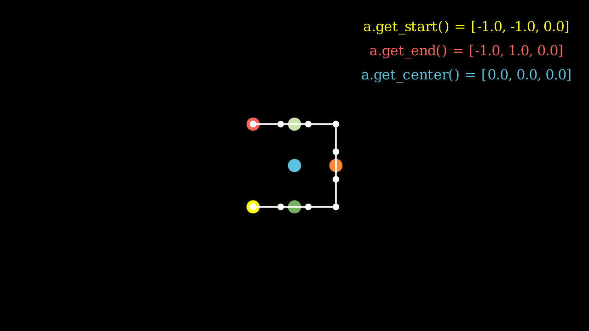
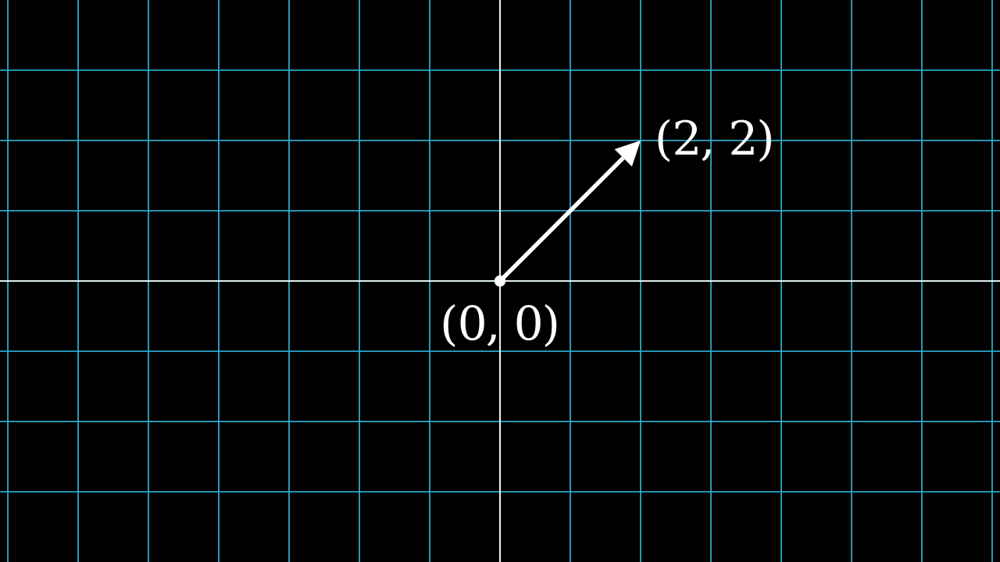

pip list | grep manimmanim 0.18.1
Note: you may need to restart the kernel to use updated packages.Benedict Thekkel
pip install manimmanim 0.18.1
Note: you may need to restart the kernel to use updated packages.Mobjectsclass SquareAndCircle(Scene):
def construct(self):
circle = Circle() # create a circle
circle.set_fill(PINK, opacity=0.5) # set the color and transparency
square = Square() # create a square
square.set_fill(BLUE, opacity=0.5) # set the color and transparency
square.next_to(circle, RIGHT, buff=0.5) # set the position
self.play(Create(circle), Create(square)) # show the shapes on screenManim Community v0.18.1
class AnimatedSquareToCircle(Scene):
def construct(self):
circle = Circle() # create a circle
square = Square() # create a square
self.play(Create(square)) # show the square on screen
self.play(square.animate.rotate(PI / 4)) # rotate the square
self.play(Transform(square, circle)) # transform the square into a circle
self.play(
square.animate.set_fill(PINK, opacity=0.5)
) # color the circle on screenManim Community v0.18.1
class DifferentRotations(Scene):
def construct(self):
left_square = Square(color=BLUE, fill_opacity=0.7).shift(2 * LEFT)
right_square = Square(color=GREEN, fill_opacity=0.7).shift(2 * RIGHT)
self.play(
left_square.animate.rotate(PI), Rotate(right_square, angle=PI), run_time=2
)
self.wait()Manim Community v0.18.1
Transform vs ReplacementTransformThe difference between Transform and ReplacementTransform is that Transform(mob1, mob2) transforms the points (as well as other attributes like color) of mob1 into the points/attributes of mob2.
ReplacementTransform(mob1, mob2) on the other hand literally replaces mob1 on the scene with mob2.
The use of ReplacementTransform or Transform is mostly up to personal preference. They can be used to accomplish the same effect, as shown below.
class TwoTransforms(Scene):
def transform(self):
a = Circle()
b = Square()
c = Triangle()
self.play(Transform(a, b))
self.play(Transform(a, c))
self.play(FadeOut(a))
def replacement_transform(self):
a = Circle()
b = Square()
c = Triangle()
self.play(ReplacementTransform(a, b))
self.play(ReplacementTransform(b, c))
self.play(FadeOut(c))
def construct(self):
self.transform()
self.wait(0.5) # wait for 0.5 seconds
self.replacement_transform()Manim Community v0.18.1
class MobjectPlacement(Scene):
def construct(self):
circle = Circle()
square = Square()
triangle = Triangle()
# place the circle two units left from the origin
circle.move_to(LEFT * 2)
# place the square to the left of the circle
square.next_to(circle, LEFT)
# align the left border of the triangle to the left border of the circle
triangle.align_to(circle, LEFT)
self.add(circle, square, triangle)
self.wait(1)Manim Community v0.18.1
class MobjectStyling(Scene):
def construct(self):
circle = Circle().shift(LEFT)
square = Square().shift(UP)
triangle = Triangle().shift(RIGHT)
circle.set_stroke(color=GREEN, width=20)
square.set_fill(YELLOW, opacity=1.0)
triangle.set_fill(PINK, opacity=0.5)
self.add(circle, square, triangle)
self.wait(1)Manim Community v0.18.1
class SomeAnimations(Scene):
def construct(self):
square = Square().set_fill(RED, opacity=1.0)
self.add(square)
# some animations display mobjects, ...
self.play(FadeIn(square))
# ... some move or rotate mobjects around...
self.play(Rotate(square, PI/4))
self.play(square.animate.set_fill(WHITE).shift(UP).rotate(PI / 3), run_time=2)
# some animations remove mobjects from the screen
self.play(FadeOut(square))
self.wait(1)Manim Community v0.18.1
class MobjectExample(Scene):
def construct(self):
p1 = [-1,-1, 0]
p2 = [ 1,-1, 0]
p3 = [ 1, 1, 0]
p4 = [-1, 1, 0]
a = Line(p1,p2).append_points(Line(p2,p3).points).append_points(Line(p3,p4).points)
point_start = a.get_start()
point_end = a.get_end()
point_center = a.get_center()
self.add(Text(f"a.get_start() = {np.round(point_start,2).tolist()}", font_size=24).to_edge(UR).set_color(YELLOW))
self.add(Text(f"a.get_end() = {np.round(point_end,2).tolist()}", font_size=24).next_to(self.mobjects[-1],DOWN).set_color(RED))
self.add(Text(f"a.get_center() = {np.round(point_center,2).tolist()}", font_size=24).next_to(self.mobjects[-1],DOWN).set_color(BLUE))
self.add(Dot(a.get_start()).set_color(YELLOW).scale(2))
self.add(Dot(a.get_end()).set_color(RED).scale(2))
self.add(Dot(a.get_top()).set_color(GREEN_A).scale(2))
self.add(Dot(a.get_bottom()).set_color(GREEN_D).scale(2))
self.add(Dot(a.get_center()).set_color(BLUE).scale(2))
self.add(Dot(a.point_from_proportion(0.5)).set_color(ORANGE).scale(2))
self.add(*[Dot(x) for x in a.points])
self.add(a)Manim Community v0.18.1

class BraceAnnotation(Scene):
def construct(self):
dot = Dot([-2, -1, 0])
dot2 = Dot([2, 1, 0])
line = Line(dot.get_center(), dot2.get_center()).set_color(ORANGE)
b1 = Brace(line)
b1text = b1.get_text(f"Horizontal distance")
b2 = Brace(line, direction=line.copy().rotate(PI / 2).get_unit_vector())
b2text = b2.get_tex(f"x-x_1")
self.add(line, dot, dot2, b1, b2, b1text, b2text)Manim Community v0.18.1
[05/01/24 19:15:57] ERROR LaTeX compilation error: LaTeX Error: File `standalone.cls' tex_file_writing.py:314 not found.
ERROR Context of error: tex_file_writing.py:348 -> \documentclass[preview]{standalone} \usepackage[english]{babel} \usepackage{amsmath} \usepackage{amssymb}
ERROR LaTeX compilation error: Emergency stop. tex_file_writing.py:314
ERROR Context of error: tex_file_writing.py:348 -> \documentclass[preview]{standalone} \usepackage[english]{babel} \usepackage{amsmath} \usepackage{amssymb}
--------------------------------------------------------------------------- ValueError Traceback (most recent call last) Cell In[15], line 1 ----> 1 get_ipython().run_cell_magic('manim', '-qm -v WARNING BraceAnnotation', '\nclass BraceAnnotation(Scene):\n def construct(self):\n dot = Dot([-2, -1, 0])\n dot2 = Dot([2, 1, 0])\n line = Line(dot.get_center(), dot2.get_center()).set_color(ORANGE)\n b1 = Brace(line)\n b1text = b1.get_text(f"Horizontal distance")\n b2 = Brace(line, direction=line.copy().rotate(PI / 2).get_unit_vector())\n b2text = b2.get_tex(f"x-x_1")\n self.add(line, dot, dot2, b1, b2, b1text, b2text)\n') File ~/mambaforge/envs/pfast/lib/python3.12/site-packages/IPython/core/interactiveshell.py:2541, in InteractiveShell.run_cell_magic(self, magic_name, line, cell) 2539 with self.builtin_trap: 2540 args = (magic_arg_s, cell) -> 2541 result = fn(*args, **kwargs) 2543 # The code below prevents the output from being displayed 2544 # when using magics with decorator @output_can_be_silenced 2545 # when the last Python token in the expression is a ';'. 2546 if getattr(fn, magic.MAGIC_OUTPUT_CAN_BE_SILENCED, False): File ~/mambaforge/envs/pfast/lib/python3.12/site-packages/manim/utils/ipython_magic.py:143, in ManimMagic.manim(self, line, cell, local_ns) 141 SceneClass = local_ns[config["scene_names"][0]] 142 scene = SceneClass(renderer=renderer) --> 143 scene.render() 144 finally: 145 # Shader cache becomes invalid as the context is destroyed 146 shader_program_cache.clear() File ~/mambaforge/envs/pfast/lib/python3.12/site-packages/manim/scene/scene.py:229, in Scene.render(self, preview) 227 self.setup() 228 try: --> 229 self.construct() 230 except EndSceneEarlyException: 231 pass File <string>:8, in construct(self) File ~/mambaforge/envs/pfast/lib/python3.12/site-packages/manim/mobject/svg/brace.py:139, in Brace.get_text(self, *text, **kwargs) 138 def get_text(self, *text, **kwargs): --> 139 text_mob = Tex(*text) 140 self.put_at_tip(text_mob, **kwargs) 141 return text_mob File ~/mambaforge/envs/pfast/lib/python3.12/site-packages/manim/mobject/text/tex_mobject.py:443, in Tex.__init__(self, arg_separator, tex_environment, *tex_strings, **kwargs) 440 def __init__( 441 self, *tex_strings, arg_separator="", tex_environment="center", **kwargs 442 ): --> 443 super().__init__( 444 *tex_strings, 445 arg_separator=arg_separator, 446 tex_environment=tex_environment, 447 **kwargs, 448 ) File ~/mambaforge/envs/pfast/lib/python3.12/site-packages/manim/mobject/text/tex_mobject.py:293, in MathTex.__init__(self, arg_separator, substrings_to_isolate, tex_to_color_map, tex_environment, *tex_strings, **kwargs) 280 if self.brace_notation_split_occurred: 281 logger.error( 282 dedent( 283 """\ (...) 291 ), 292 ) --> 293 raise compilation_error 294 self.set_color_by_tex_to_color_map(self.tex_to_color_map) 296 if self.organize_left_to_right: File ~/mambaforge/envs/pfast/lib/python3.12/site-packages/manim/mobject/text/tex_mobject.py:272, in MathTex.__init__(self, arg_separator, substrings_to_isolate, tex_to_color_map, tex_environment, *tex_strings, **kwargs) 270 self.tex_strings = self._break_up_tex_strings(tex_strings) 271 try: --> 272 super().__init__( 273 self.arg_separator.join(self.tex_strings), 274 tex_environment=self.tex_environment, 275 tex_template=self.tex_template, 276 **kwargs, 277 ) 278 self._break_up_by_substrings() 279 except ValueError as compilation_error: File ~/mambaforge/envs/pfast/lib/python3.12/site-packages/manim/mobject/text/tex_mobject.py:81, in SingleStringMathTex.__init__(self, tex_string, stroke_width, should_center, height, organize_left_to_right, tex_environment, tex_template, font_size, **kwargs) 79 assert isinstance(tex_string, str) 80 self.tex_string = tex_string ---> 81 file_name = tex_to_svg_file( 82 self._get_modified_expression(tex_string), 83 environment=self.tex_environment, 84 tex_template=self.tex_template, 85 ) 86 super().__init__( 87 file_name=file_name, 88 should_center=should_center, (...) 95 **kwargs, 96 ) 97 self.init_colors() File ~/mambaforge/envs/pfast/lib/python3.12/site-packages/manim/utils/tex_file_writing.py:63, in tex_to_svg_file(expression, environment, tex_template) 60 if svg_file.exists(): 61 return svg_file ---> 63 dvi_file = compile_tex( 64 tex_file, 65 tex_template.tex_compiler, 66 tex_template.output_format, 67 ) 68 svg_file = convert_to_svg(dvi_file, tex_template.output_format) 69 if not config["no_latex_cleanup"]: File ~/mambaforge/envs/pfast/lib/python3.12/site-packages/manim/utils/tex_file_writing.py:213, in compile_tex(tex_file, tex_compiler, output_format) 211 log_file = tex_file.with_suffix(".log") 212 print_all_tex_errors(log_file, tex_compiler, tex_file) --> 213 raise ValueError( 214 f"{tex_compiler} error converting to" 215 f" {output_format[1:]}. See log output above or" 216 f" the log file: {log_file}", 217 ) 218 return result ValueError: latex error converting to dvi. See log output above or the log file: media/Tex/1c22c507eca0dfce.log
class VectorArrow(Scene):
def construct(self):
dot = Dot(ORIGIN)
arrow = Arrow(ORIGIN, [2, 2, 0], buff=0)
numberplane = NumberPlane()
origin_text = Text('(0, 0)').next_to(dot, DOWN)
tip_text = Text('(2, 2)').next_to(arrow.get_end(), RIGHT)
self.add(numberplane, dot, arrow, origin_text, tip_text)Manim Community v0.18.1

class PointMovingOnShapes(Scene):
def construct(self):
circle = Circle(radius=1, color=BLUE)
dot = Dot()
dot2 = dot.copy().shift(RIGHT)
self.add(dot)
line = Line([3, 0, 0], [5, 0, 0])
self.add(line)
self.play(GrowFromCenter(circle))
self.play(Transform(dot, dot2))
self.play(MoveAlongPath(dot, circle), run_time=2, rate_func=linear)
self.play(Rotating(dot, about_point=[2, 0, 0]), run_time=1.5)
self.wait()Manim Community v0.18.1
class MovingAngle(Scene):
def construct(self):
rotation_center = LEFT
theta_tracker = ValueTracker(110)
line1 = Line(LEFT, RIGHT)
line_moving = Line(LEFT, RIGHT)
line_ref = line_moving.copy()
line_moving.rotate(
theta_tracker.get_value() * DEGREES, about_point=rotation_center
)
a = Angle(line1, line_moving, radius=0.5, other_angle=False)
tex = MathTex(r"\theta").move_to(
Angle(
line1, line_moving, radius=0.5 + 3 * SMALL_BUFF, other_angle=False
).point_from_proportion(0.5)
)
self.add(line1, line_moving, a, tex)
self.wait()
line_moving.add_updater(
lambda x: x.become(line_ref.copy()).rotate(
theta_tracker.get_value() * DEGREES, about_point=rotation_center
)
)
a.add_updater(
lambda x: x.become(Angle(line1, line_moving, radius=0.5, other_angle=False))
)
tex.add_updater(
lambda x: x.move_to(
Angle(
line1, line_moving, radius=0.5 + 3 * SMALL_BUFF, other_angle=False
).point_from_proportion(0.5)
)
)
self.play(theta_tracker.animate.set_value(40))
self.play(theta_tracker.animate.increment_value(140))
self.play(tex.animate.set_color(RED), run_time=0.5)
self.play(theta_tracker.animate.set_value(350))Manim Community v0.18.1
[05/01/24 19:16:10] ERROR LaTeX compilation error: LaTeX Error: File `standalone.cls' tex_file_writing.py:314 not found.
ERROR Context of error: tex_file_writing.py:348 -> \documentclass[preview]{standalone} \usepackage[english]{babel} \usepackage{amsmath} \usepackage{amssymb}
ERROR LaTeX compilation error: Emergency stop. tex_file_writing.py:314
ERROR Context of error: tex_file_writing.py:348 -> \documentclass[preview]{standalone} \usepackage[english]{babel} \usepackage{amsmath} \usepackage{amssymb}
--------------------------------------------------------------------------- ValueError Traceback (most recent call last) Cell In[18], line 1 ----> 1 get_ipython().run_cell_magic('manim', '-qm -v WARNING MovingAngle', '\nclass MovingAngle(Scene):\n def construct(self):\n rotation_center = LEFT\n\n theta_tracker = ValueTracker(110)\n line1 = Line(LEFT, RIGHT)\n line_moving = Line(LEFT, RIGHT)\n line_ref = line_moving.copy()\n line_moving.rotate(\n theta_tracker.get_value() * DEGREES, about_point=rotation_center\n )\n a = Angle(line1, line_moving, radius=0.5, other_angle=False)\n tex = MathTex(r"\\theta").move_to(\n Angle(\n line1, line_moving, radius=0.5 + 3 * SMALL_BUFF, other_angle=False\n ).point_from_proportion(0.5)\n )\n\n self.add(line1, line_moving, a, tex)\n self.wait()\n\n line_moving.add_updater(\n lambda x: x.become(line_ref.copy()).rotate(\n theta_tracker.get_value() * DEGREES, about_point=rotation_center\n )\n )\n\n a.add_updater(\n lambda x: x.become(Angle(line1, line_moving, radius=0.5, other_angle=False))\n )\n tex.add_updater(\n lambda x: x.move_to(\n Angle(\n line1, line_moving, radius=0.5 + 3 * SMALL_BUFF, other_angle=False\n ).point_from_proportion(0.5)\n )\n )\n\n self.play(theta_tracker.animate.set_value(40))\n self.play(theta_tracker.animate.increment_value(140))\n self.play(tex.animate.set_color(RED), run_time=0.5)\n self.play(theta_tracker.animate.set_value(350))\n') File ~/mambaforge/envs/pfast/lib/python3.12/site-packages/IPython/core/interactiveshell.py:2541, in InteractiveShell.run_cell_magic(self, magic_name, line, cell) 2539 with self.builtin_trap: 2540 args = (magic_arg_s, cell) -> 2541 result = fn(*args, **kwargs) 2543 # The code below prevents the output from being displayed 2544 # when using magics with decorator @output_can_be_silenced 2545 # when the last Python token in the expression is a ';'. 2546 if getattr(fn, magic.MAGIC_OUTPUT_CAN_BE_SILENCED, False): File ~/mambaforge/envs/pfast/lib/python3.12/site-packages/manim/utils/ipython_magic.py:143, in ManimMagic.manim(self, line, cell, local_ns) 141 SceneClass = local_ns[config["scene_names"][0]] 142 scene = SceneClass(renderer=renderer) --> 143 scene.render() 144 finally: 145 # Shader cache becomes invalid as the context is destroyed 146 shader_program_cache.clear() File ~/mambaforge/envs/pfast/lib/python3.12/site-packages/manim/scene/scene.py:229, in Scene.render(self, preview) 227 self.setup() 228 try: --> 229 self.construct() 230 except EndSceneEarlyException: 231 pass File <string>:14, in construct(self) File ~/mambaforge/envs/pfast/lib/python3.12/site-packages/manim/mobject/text/tex_mobject.py:293, in MathTex.__init__(self, arg_separator, substrings_to_isolate, tex_to_color_map, tex_environment, *tex_strings, **kwargs) 280 if self.brace_notation_split_occurred: 281 logger.error( 282 dedent( 283 """\ (...) 291 ), 292 ) --> 293 raise compilation_error 294 self.set_color_by_tex_to_color_map(self.tex_to_color_map) 296 if self.organize_left_to_right: File ~/mambaforge/envs/pfast/lib/python3.12/site-packages/manim/mobject/text/tex_mobject.py:272, in MathTex.__init__(self, arg_separator, substrings_to_isolate, tex_to_color_map, tex_environment, *tex_strings, **kwargs) 270 self.tex_strings = self._break_up_tex_strings(tex_strings) 271 try: --> 272 super().__init__( 273 self.arg_separator.join(self.tex_strings), 274 tex_environment=self.tex_environment, 275 tex_template=self.tex_template, 276 **kwargs, 277 ) 278 self._break_up_by_substrings() 279 except ValueError as compilation_error: File ~/mambaforge/envs/pfast/lib/python3.12/site-packages/manim/mobject/text/tex_mobject.py:81, in SingleStringMathTex.__init__(self, tex_string, stroke_width, should_center, height, organize_left_to_right, tex_environment, tex_template, font_size, **kwargs) 79 assert isinstance(tex_string, str) 80 self.tex_string = tex_string ---> 81 file_name = tex_to_svg_file( 82 self._get_modified_expression(tex_string), 83 environment=self.tex_environment, 84 tex_template=self.tex_template, 85 ) 86 super().__init__( 87 file_name=file_name, 88 should_center=should_center, (...) 95 **kwargs, 96 ) 97 self.init_colors() File ~/mambaforge/envs/pfast/lib/python3.12/site-packages/manim/utils/tex_file_writing.py:63, in tex_to_svg_file(expression, environment, tex_template) 60 if svg_file.exists(): 61 return svg_file ---> 63 dvi_file = compile_tex( 64 tex_file, 65 tex_template.tex_compiler, 66 tex_template.output_format, 67 ) 68 svg_file = convert_to_svg(dvi_file, tex_template.output_format) 69 if not config["no_latex_cleanup"]: File ~/mambaforge/envs/pfast/lib/python3.12/site-packages/manim/utils/tex_file_writing.py:213, in compile_tex(tex_file, tex_compiler, output_format) 211 log_file = tex_file.with_suffix(".log") 212 print_all_tex_errors(log_file, tex_compiler, tex_file) --> 213 raise ValueError( 214 f"{tex_compiler} error converting to" 215 f" {output_format[1:]}. See log output above or" 216 f" the log file: {log_file}", 217 ) 218 return result ValueError: latex error converting to dvi. See log output above or the log file: media/Tex/0cec1e994feab60e.log
class MovingDots(Scene):
def construct(self):
d1,d2=Dot(color=BLUE),Dot(color=GREEN)
dg=VGroup(d1,d2).arrange(RIGHT,buff=1)
l1=Line(d1.get_center(),d2.get_center()).set_color(RED)
x=ValueTracker(0)
y=ValueTracker(0)
d1.add_updater(lambda z: z.set_x(x.get_value()))
d2.add_updater(lambda z: z.set_y(y.get_value()))
l1.add_updater(lambda z: z.become(Line(d1.get_center(),d2.get_center())))
self.add(d1,d2,l1)
self.play(x.animate.set_value(5))
self.play(y.animate.set_value(4))
self.wait()Manim Community v0.18.1
class MovingGroupToDestination(Scene):
def construct(self):
group = VGroup(Dot(LEFT), Dot(ORIGIN), Dot(RIGHT, color=RED), Dot(2 * RIGHT)).scale(1.4)
dest = Dot([4, 3, 0], color=YELLOW)
self.add(group, dest)
self.play(group.animate.shift(dest.get_center() - group[2].get_center()))
self.wait(0.5)Manim Community v0.18.1
class SinAndCosFunctionPlot(Scene):
def construct(self):
axes = Axes(
x_range=[-10, 10.3, 1],
y_range=[-1.5, 1.5, 1],
x_length=10,
axis_config={"color": GREEN},
x_axis_config={
"numbers_to_include": np.arange(-10, 10.01, 2),
"numbers_with_elongated_ticks": np.arange(-10, 10.01, 2),
},
tips=False,
)
axes_labels = axes.get_axis_labels()
sin_graph = axes.plot(lambda x: np.sin(x), color=BLUE)
cos_graph = axes.plot(lambda x: np.cos(x), color=RED)
sin_label = axes.get_graph_label(
sin_graph, "\\sin(x)", x_val=-10, direction=UP / 2
)
cos_label = axes.get_graph_label(cos_graph, label="\\cos(x)")
vert_line = axes.get_vertical_line(
axes.i2gp(TAU, cos_graph), color=YELLOW, line_func=Line
)
line_label = axes.get_graph_label(
cos_graph, "x=2\pi", x_val=TAU, direction=UR, color=WHITE
)
plot = VGroup(axes, sin_graph, cos_graph, vert_line)
labels = VGroup(axes_labels, sin_label, cos_label, line_label)
self.add(plot, labels)<string>:28: SyntaxWarning: invalid escape sequence '\p'Manim Community v0.18.1
[05/01/24 19:16:12] ERROR LaTeX compilation error: LaTeX Error: File `standalone.cls' tex_file_writing.py:314 not found.
ERROR Context of error: tex_file_writing.py:348 -> \documentclass[preview]{standalone} \usepackage[english]{babel} \usepackage{amsmath} \usepackage{amssymb}
ERROR LaTeX compilation error: Emergency stop. tex_file_writing.py:314
ERROR Context of error: tex_file_writing.py:348 -> \documentclass[preview]{standalone} \usepackage[english]{babel} \usepackage{amsmath} \usepackage{amssymb}
--------------------------------------------------------------------------- ValueError Traceback (most recent call last) Cell In[21], line 1 ----> 1 get_ipython().run_cell_magic('manim', '-qm -v WARNING SinAndCosFunctionPlot', '\nclass SinAndCosFunctionPlot(Scene):\n def construct(self):\n axes = Axes(\n x_range=[-10, 10.3, 1],\n y_range=[-1.5, 1.5, 1],\n x_length=10,\n axis_config={"color": GREEN},\n x_axis_config={\n "numbers_to_include": np.arange(-10, 10.01, 2),\n "numbers_with_elongated_ticks": np.arange(-10, 10.01, 2),\n },\n tips=False,\n )\n axes_labels = axes.get_axis_labels()\n sin_graph = axes.plot(lambda x: np.sin(x), color=BLUE)\n cos_graph = axes.plot(lambda x: np.cos(x), color=RED)\n\n sin_label = axes.get_graph_label(\n sin_graph, "\\\\sin(x)", x_val=-10, direction=UP / 2\n )\n cos_label = axes.get_graph_label(cos_graph, label="\\\\cos(x)")\n\n vert_line = axes.get_vertical_line(\n axes.i2gp(TAU, cos_graph), color=YELLOW, line_func=Line\n )\n line_label = axes.get_graph_label(\n cos_graph, "x=2\\pi", x_val=TAU, direction=UR, color=WHITE\n )\n\n plot = VGroup(axes, sin_graph, cos_graph, vert_line)\n labels = VGroup(axes_labels, sin_label, cos_label, line_label)\n self.add(plot, labels)\n') File ~/mambaforge/envs/pfast/lib/python3.12/site-packages/IPython/core/interactiveshell.py:2541, in InteractiveShell.run_cell_magic(self, magic_name, line, cell) 2539 with self.builtin_trap: 2540 args = (magic_arg_s, cell) -> 2541 result = fn(*args, **kwargs) 2543 # The code below prevents the output from being displayed 2544 # when using magics with decorator @output_can_be_silenced 2545 # when the last Python token in the expression is a ';'. 2546 if getattr(fn, magic.MAGIC_OUTPUT_CAN_BE_SILENCED, False): File ~/mambaforge/envs/pfast/lib/python3.12/site-packages/manim/utils/ipython_magic.py:143, in ManimMagic.manim(self, line, cell, local_ns) 141 SceneClass = local_ns[config["scene_names"][0]] 142 scene = SceneClass(renderer=renderer) --> 143 scene.render() 144 finally: 145 # Shader cache becomes invalid as the context is destroyed 146 shader_program_cache.clear() File ~/mambaforge/envs/pfast/lib/python3.12/site-packages/manim/scene/scene.py:229, in Scene.render(self, preview) 227 self.setup() 228 try: --> 229 self.construct() 230 except EndSceneEarlyException: 231 pass File <string>:4, in construct(self) File ~/mambaforge/envs/pfast/lib/python3.12/site-packages/manim/mobject/graphing/coordinate_systems.py:1896, in Axes.__init__(self, x_range, y_range, x_length, y_length, axis_config, x_axis_config, y_axis_config, tips, **kwargs) 1893 else: 1894 self.y_axis_config["exclude_origin_tick"] = False -> 1896 self.x_axis = self._create_axis(self.x_range, self.x_axis_config, self.x_length) 1897 self.y_axis = self._create_axis(self.y_range, self.y_axis_config, self.y_length) 1899 # Add as a separate group in case various other 1900 # mobjects are added to self, as for example in 1901 # NumberPlane below File ~/mambaforge/envs/pfast/lib/python3.12/site-packages/manim/mobject/graphing/coordinate_systems.py:1971, in Axes._create_axis(self, range_terms, axis_config, length) 1954 """Creates an axis and dynamically adjusts its position depending on where 0 is located on the line. 1955 1956 Parameters (...) 1968 Returns a number line based on ``range_terms``. 1969 """ 1970 axis_config["length"] = length -> 1971 axis = NumberLine(range_terms, **axis_config) 1973 # without the call to _origin_shift, graph does not exist when min > 0 or max < 0 1974 # shifts the axis so that 0 is centered 1975 axis.shift(-axis.number_to_point(self._origin_shift([axis.x_min, axis.x_max]))) File ~/mambaforge/envs/pfast/lib/python3.12/site-packages/manim/mobject/graphing/number_line.py:261, in NumberLine.__init__(self, x_range, length, unit_size, include_ticks, tick_size, numbers_with_elongated_ticks, longer_tick_multiple, exclude_origin_tick, rotation, stroke_width, include_tip, tip_width, tip_height, tip_shape, include_numbers, font_size, label_direction, label_constructor, scaling, line_to_number_buff, decimal_number_config, numbers_to_exclude, numbers_to_include, **kwargs) 246 self.add_labels( 247 dict( 248 zip( (...) 257 ), 258 ) 260 else: --> 261 self.add_numbers( 262 x_values=self.numbers_to_include, 263 excluding=self.numbers_to_exclude, 264 font_size=self.font_size, 265 ) File ~/mambaforge/envs/pfast/lib/python3.12/site-packages/manim/mobject/graphing/number_line.py:533, in NumberLine.add_numbers(self, x_values, excluding, font_size, label_constructor, **kwargs) 530 if x in excluding: 531 continue 532 numbers.add( --> 533 self.get_number_mobject( 534 x, 535 font_size=font_size, 536 label_constructor=label_constructor, 537 **kwargs, 538 ) 539 ) 540 self.add(numbers) 541 self.numbers = numbers File ~/mambaforge/envs/pfast/lib/python3.12/site-packages/manim/mobject/graphing/number_line.py:471, in NumberLine.get_number_mobject(self, x, direction, buff, font_size, label_constructor, **number_config) 468 if label_constructor is None: 469 label_constructor = self.label_constructor --> 471 num_mob = DecimalNumber( 472 x, font_size=font_size, mob_class=label_constructor, **number_config 473 ) 475 num_mob.next_to(self.number_to_point(x), direction=direction, buff=buff) 476 if x < 0 and self.label_direction[0] == 0: 477 # Align without the minus sign File ~/mambaforge/envs/pfast/lib/python3.12/site-packages/manim/mobject/text/numbers.py:135, in DecimalNumber.__init__(self, number, num_decimal_places, mob_class, include_sign, group_with_commas, digit_buff_per_font_unit, show_ellipsis, unit, unit_buff_per_font_unit, include_background_rectangle, edge_to_fix, font_size, stroke_width, fill_opacity, **kwargs) 117 self.initial_config = kwargs.copy() 118 self.initial_config.update( 119 { 120 "num_decimal_places": num_decimal_places, (...) 132 }, 133 ) --> 135 self._set_submobjects_from_number(number) 136 self.init_colors() File ~/mambaforge/envs/pfast/lib/python3.12/site-packages/manim/mobject/text/numbers.py:160, in DecimalNumber._set_submobjects_from_number(self, number) 157 self.submobjects = [] 159 num_string = self._get_num_string(number) --> 160 self.add(*(map(self._string_to_mob, num_string))) 162 # Add non-numerical bits 163 if self.show_ellipsis: File ~/mambaforge/envs/pfast/lib/python3.12/site-packages/manim/mobject/text/numbers.py:225, in DecimalNumber._string_to_mob(self, string, mob_class, **kwargs) 222 mob_class = self.mob_class 224 if string not in string_to_mob_map: --> 225 string_to_mob_map[string] = mob_class(string, **kwargs) 226 mob = string_to_mob_map[string].copy() 227 mob.font_size = self._font_size File ~/mambaforge/envs/pfast/lib/python3.12/site-packages/manim/mobject/text/tex_mobject.py:293, in MathTex.__init__(self, arg_separator, substrings_to_isolate, tex_to_color_map, tex_environment, *tex_strings, **kwargs) 280 if self.brace_notation_split_occurred: 281 logger.error( 282 dedent( 283 """\ (...) 291 ), 292 ) --> 293 raise compilation_error 294 self.set_color_by_tex_to_color_map(self.tex_to_color_map) 296 if self.organize_left_to_right: File ~/mambaforge/envs/pfast/lib/python3.12/site-packages/manim/mobject/text/tex_mobject.py:272, in MathTex.__init__(self, arg_separator, substrings_to_isolate, tex_to_color_map, tex_environment, *tex_strings, **kwargs) 270 self.tex_strings = self._break_up_tex_strings(tex_strings) 271 try: --> 272 super().__init__( 273 self.arg_separator.join(self.tex_strings), 274 tex_environment=self.tex_environment, 275 tex_template=self.tex_template, 276 **kwargs, 277 ) 278 self._break_up_by_substrings() 279 except ValueError as compilation_error: File ~/mambaforge/envs/pfast/lib/python3.12/site-packages/manim/mobject/text/tex_mobject.py:81, in SingleStringMathTex.__init__(self, tex_string, stroke_width, should_center, height, organize_left_to_right, tex_environment, tex_template, font_size, **kwargs) 79 assert isinstance(tex_string, str) 80 self.tex_string = tex_string ---> 81 file_name = tex_to_svg_file( 82 self._get_modified_expression(tex_string), 83 environment=self.tex_environment, 84 tex_template=self.tex_template, 85 ) 86 super().__init__( 87 file_name=file_name, 88 should_center=should_center, (...) 95 **kwargs, 96 ) 97 self.init_colors() File ~/mambaforge/envs/pfast/lib/python3.12/site-packages/manim/utils/tex_file_writing.py:63, in tex_to_svg_file(expression, environment, tex_template) 60 if svg_file.exists(): 61 return svg_file ---> 63 dvi_file = compile_tex( 64 tex_file, 65 tex_template.tex_compiler, 66 tex_template.output_format, 67 ) 68 svg_file = convert_to_svg(dvi_file, tex_template.output_format) 69 if not config["no_latex_cleanup"]: File ~/mambaforge/envs/pfast/lib/python3.12/site-packages/manim/utils/tex_file_writing.py:213, in compile_tex(tex_file, tex_compiler, output_format) 211 log_file = tex_file.with_suffix(".log") 212 print_all_tex_errors(log_file, tex_compiler, tex_file) --> 213 raise ValueError( 214 f"{tex_compiler} error converting to" 215 f" {output_format[1:]}. See log output above or" 216 f" the log file: {log_file}", 217 ) 218 return result ValueError: latex error converting to dvi. See log output above or the log file: media/Tex/ba96de15f98acfc8.log
class FollowingGraphCamera(MovingCameraScene):
def construct(self):
self.camera.frame.save_state()
# create the axes and the curve
ax = Axes(x_range=[-1, 10], y_range=[-1, 10])
graph = ax.plot(lambda x: np.sin(x), color=BLUE, x_range=[0, 3 * PI])
# create dots based on the graph
moving_dot = Dot(ax.i2gp(graph.t_min, graph), color=ORANGE)
dot_1 = Dot(ax.i2gp(graph.t_min, graph))
dot_2 = Dot(ax.i2gp(graph.t_max, graph))
self.add(ax, graph, dot_1, dot_2, moving_dot)
self.play(self.camera.frame.animate.scale(0.5).move_to(moving_dot))
def update_curve(mob):
mob.move_to(moving_dot.get_center())
self.camera.frame.add_updater(update_curve)
self.play(MoveAlongPath(moving_dot, graph, rate_func=linear))
self.camera.frame.remove_updater(update_curve)
self.play(Restore(self.camera.frame))Manim Community v0.18.1
class ThreeDCameraRotation(ThreeDScene):
def construct(self):
axes = ThreeDAxes()
circle=Circle()
self.set_camera_orientation(phi=75 * DEGREES, theta=30 * DEGREES)
self.add(circle,axes)
self.begin_ambient_camera_rotation(rate=0.1)
self.wait()
self.stop_ambient_camera_rotation()
self.move_camera(phi=75 * DEGREES, theta=30 * DEGREES)
self.wait()Manim Community v0.18.1